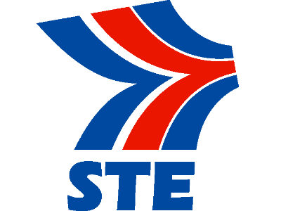
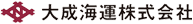
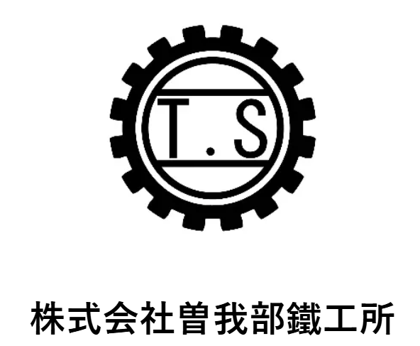
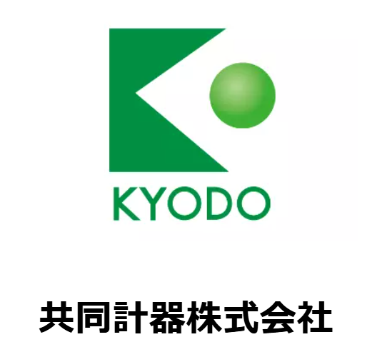

スミヤ機工株式会社の強み
- 80年以上の経験と信頼：創業以来、500社以上と取引実績があり、信頼関係を築いています。
- 高品質な製品提供：年間3000点以上の産業機械器具を取り扱い、100%の製品検査を実施しています。
- 柔軟な対応力：99%の納期遵守率を誇り、年間200件以上のカスタマイズ対応実績があります。
- 地域密着型経営：愛媛県内の100社以上と取引があり、地域経済に貢献しています。
- 技術革新への対応：20件以上の新技術導入実績があり、最新技術を取り入れた製品で30%の販売増を達成しています。
スミヤ機工株式会社の実績
- 長期取引先との信頼関係：取引先の85%以上が10年以上の顧客です。
- 製品供給実績：年間1万点以上を供給し、90%以上の顧客からリピート注文を受けています。
- 地域貢献：50社以上の地元企業と共同事業を展開し、地域経済に貢献しています。
- 品質向上への投資：年間500万円以上を品質改善に投資し、不良率は0.5%以下を維持しています。
主要クライアント



